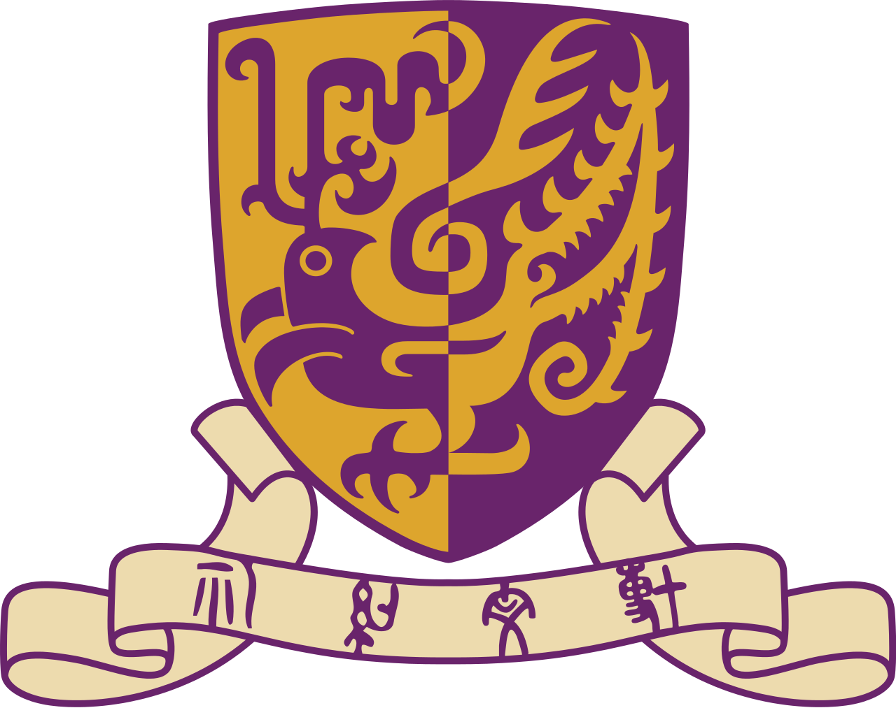

Zeliang Zhang
|
I am a second-year PhD student in the Department of Computer Science at the University of Rochester, advised by Prof. Chenliang Xu. I received my B.Eng. from CS Department, Huazhong University of Science and Technology in 2022. In my undergrad, I worked with Prof. He and Mr. Wang on adversarial machine learning. I also work closely with Prof. Peng on gradient estimation, and Dr. Liu on high-performance computation.
Email / CV / Google Scholar |

|
|
|
| [06/2023] | I was invited as a reviewer for BMVC 2023. |
| [10/2022] | One paper accepted at IEEE Transaction on Computers! |
| [06/2022] | One paper accepted at ECCV 2022! |
| [04/2022] | One paper accepted at CASE 2022! |
| [10/2021] | I will work as a research intern in the machine learning for sustainability (MLSS) group of MSRA, Beijing. |
|
|

|
Jinyang Jiang, Zeliang Zhang*, Chenliang Xu, Zhaofei Yu, Yijie Peng. arXiv preprint, 2023 We explore the potential of Likelihood ratio method for gradient estimation and train multi-architecures of NN without back-propagation. |

|
Classical Simulation of Quantum Circuits: Parallel Environments and Benchmark
Xiao-Yang Liu, Zeliang Zhang Under review, 2023 We develop a dozen of massively parallel environments to simulate quantum circuits. We open-source our parallel gym environments and benchmarks. |

|
Bag of Tricks to Boost the Adversarial Transferability
Zeliang Zhang, Wei Yao, Xiaosen Wang, Chenliang Xu. Under review, 2023 We propose a bag of tricks to boost the adversarial transferability among different models. |

|
Chao Huang, Haojie Liu, Tong Chen, Qiu Shen, Zhan Ma IEEE Visual Communications and Image Processing (VCIP), 2019 (Oral Presentation) An image compression system under extreme condition, e.g., < 0.05 bits per pixel (bpp). |
|
|
|
University of Rochester , NY, USA
Ph.D. in Computer Science Jan. 2021 - Present Advisor: Chenliang Xu |
|
|
Nanjing University , Nanjing, China
B.Eng in Electronic Science and Engineering Sept. 2015 - Jun. 2019 |
|
|
|  |
The Chinese University of Hong Kong , Shatin, Hong Kong
Research Assistant Jul. 2019 - Dec. 2020 Advisor: Chi-Wing Fu |
|
The template is based on Jon Barron's website. 
|